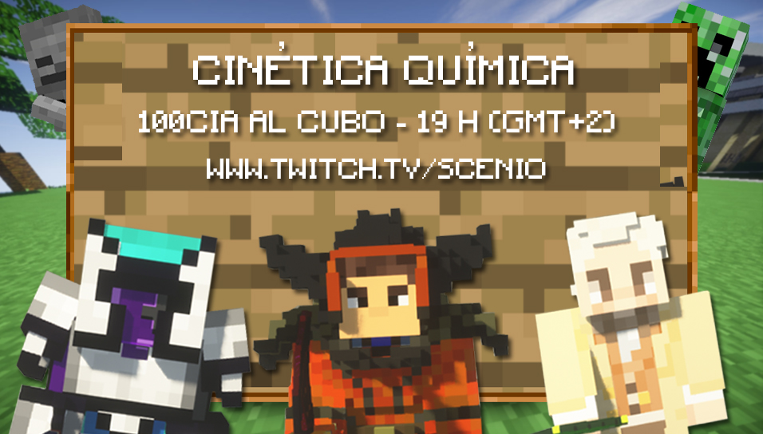
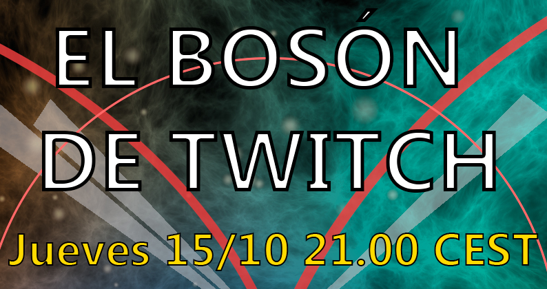

Cuenta atrás personalizada (Por defecto, inicia en 10 minutos. Insertar minutos en el cuadro)
Science Stravaganzza

Duración:120 mins
100cia al cubo

Crespación en la cocina

Duración:120 mins
El bosón de Twitch
Geek and Freak science.
Temporada finalizada